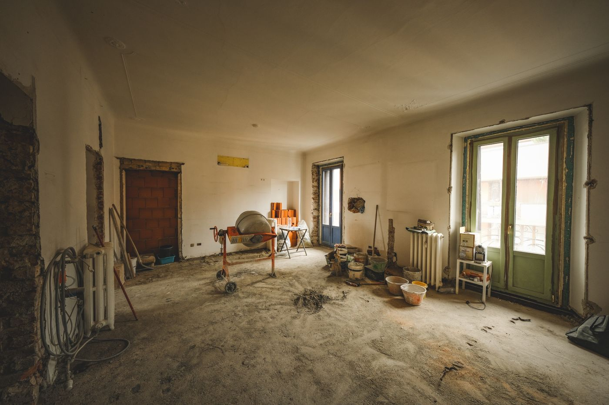

Outra prioridade.
Outro caminho.
Se procura maximizar o preço e pode esperar, uma venda tradicional pode estar mais alinhada com o que pretende.
Não precisa de deixar o contacto. Esta orientação baseia-se apenas na sua preferência, não numa avaliação do imóvel.
RESUMO DA SIMULAÇÃO
Um ponto de partida.
Não uma avaliação.
Nenhum dado foi enviado ou guardado. Assim ficará o resumo inicial antes da análise humana.
Preço de mercado e margem: por analisar. A abertura para negociar não confirma uma oportunidade.
- Sem obrigação de vender
- Sem obras prévias
- Análise inicial sem custo
Cerca de 2 minutos para preencher o formulário. A análise não garante uma proposta nem a venda em 60 dias.
- Comece em 2 minutosUm primeiro passo simples
- Sem obras préviasApresente a casa como está
- Análise inicial sem custoPerceba as suas opções
- Sem obrigação de venderA decisão é sempre sua
- Condições antes de decidirAnalise tudo com calma
NÃO É SÓ UMA CASA QUE ESTÁ EM CAUSA.
É o que ficou em espera
enquanto tenta vendê-la.
Situações ilustrativas.
Não são testemunhos de clientes.
Diferentes motivos.
Uma vontade de avançar.
Exemplos fictícios, não são avaliações de clientes. Os prazos ilustrados não são garantias de resultados.
Exemplo fictício
Foram oito meses a deixar a casa pronta para visitas e a ouvir ‘depois entramos em contacto’. Preenchi o formulário em dois minutos. Três dias depois, já tinha uma proposta para analisar. Ainda precisava de refletir, mas finalmente tinha algo concreto em mãos.
Ana M.
Perfil fictício · Meses de espera
Exemplo fictício
Durante quase dois anos, qualquer conversa sobre a casa acabava em discussão entre irmãos. Na primeira semana, conseguimos entender melhor as condições de uma possível venda. Não resolveu tudo de imediato, mas deu-nos finalmente uma base para avançar.
Miguel R.
Perfil fictício · Casa herdada
Exemplo fictício
Adiei a venda durante seis meses porque pensava que teria de renovar primeiro. Em quatro dias, recebi uma proposta pelo imóvel no estado em que estava. O maior alívio foi perceber que não precisava de me meter noutra obra.
Carla S.
Perfil fictício · Obras que não queria assumir
Exemplo fictício
Já tinha adiado a mudança duas vezes. Passadas cinco semanas, a escritura ficou concluída. Nessa noite, voltei a procurar casa na cidade onde queria viver. Desta vez, já não estava apenas a imaginar.
Pedro A.
Perfil fictício · Voltar aos planos
Exemplo fictício
Em 48 horas, explicaram-me o que podia ser feito e o que ainda precisava de confirmação. A proposta não foi o valor que tinha em mente, mas consegui fazer as contas com tranquilidade. Pela primeira vez em meses, senti que estava a tomar uma decisão em vez de continuar à espera.
Sofia L.
Perfil fictício · Clareza sem pressão
Exemplo fictício
Passei um ano a pagar despesas de uma casa onde já não vivia. Em três dias, percebi que condições precisava de considerar. Não era a solução que tinha imaginado, mas finalmente consegui fazer um plano.
Teresa F.
Perfil fictício · Uma casa fechada
Exemplo fictício
Vivo longe e cada visita obrigava-me a reorganizar a semana. Na primeira conversa, ficou claro que fotografias e documentos faltavam. Em cinco dias, deixei de sentir que estava a tratar de tudo às cegas.
João P.
Perfil fictício · Vender à distância
Exemplo fictício
O terreno estava parado há anos e o projeto já não fazia sentido para nós. Ao fim de uma semana, tínhamos uma proposta para discutir. Foi um alívio voltar a falar do futuro, em vez do que ficou por fazer.
Rita C.
Perfil fictício · Outros planos
Exemplo fictício
Tinha receio de aceitar um valor só para despachar o assunto. Em 48 horas, consegui perceber as condições e as dúvidas que faltava esclarecer. Pude pensar com calma, sem sentir que precisava de responder naquele momento.
Luís V.
Perfil fictício · Decidir com calma
01 UMA PERGUNTA QUE MUDA A CONVERSA
O vizinho pede esse valor.
Mas já vendeu?
O preço num anúncio é uma expectativa.
Uma venda acontece quando alguém aceita pagar.
O mesmo concelho.
Não a mesma procura.
A rua, os acessos e a envolvente contam. Uma média da zona não chega para avaliar o seu imóvel.
Pronto a habitar.
Ou pronto para obras?
Comparar uma casa por recuperar com uma renovada pode criar uma expectativa que o comprador não acompanha.
Muitas visualizações.
Alguma proposta?
Visitas e contactos não são uma venda. As propostas concretas ajudam a perceber a distância entre pedir e negociar.
Não vender não prova que o preço está errado. A apresentação, a divulgação e a documentação também podem estar a travar o negócio.
03 SEM SALTAR ETAPAS
Primeiro, os factos.
Depois, uma decisão.
Ninguém conhece a sua casa melhor do que si.
Começamos por ouvir.
- 01
Conte-nos o essencial.
Onde fica, em que estado está e que valor considera aceitar. Sem reunir uma pasta de documentos para começar.
- 02
Confirmamos o enquadramento.
Analisamos localização, preço e características. Havendo possibilidade, pedimos fotos e confirmamos os detalhes consigo.
- 03
Decida com as condições à frente.
Se existir viabilidade, estudamos uma proposta, sujeita a visita e documentos. Pode aceitar, negociar ou não avançar.
05 AS PERGUNTAS CERTAS
Sem letras pequenas
na conversa.
Uma boa decisão começa por saber
o que esta alternativa é. E o que não é.
Estão a dizer que o meu imóvel está caro?
Não sem o analisar. Um anúncio que não resulta é um motivo para rever preço, apresentação e condições, não uma prova automática de sobrevalorização. É preciso comparar imóveis semelhantes e distinguir preços pedidos de valores de venda verificados.
Porque pode a proposta ficar abaixo do mercado?
Um investimento precisa de acomodar custos, risco e margem. Pode preferir esta alternativa pela possibilidade de vender no estado atual. Também pode decidir que uma venda tradicional serve melhor os seus objetivos.
Tenho de fazer obras ou limpezas primeiro?
Não para apresentar o imóvel. Fotografias que mostrem o estado real são mais úteis do que preparar a casa para parecer diferente. Qualquer intervenção futura é discutida e autorizada antes de acontecer.
Também analisam terrenos e imóveis herdados?
Sim. Num terreno, é necessário verificar acessos, infraestruturas e viabilidade urbanística. Num imóvel herdado, é necessário confirmar documentação e quem pode decidir sobre a venda. Não garantimos que todos os casos possam avançar.
O envio obriga-me a vender ou garante uma proposta?
Não. É apenas um pedido de análise. Uma eventual proposta depende da viabilidade, visita e documentação. Não há garantia de compra nem uma data de escritura prometida.
Isto é um pedido de mediação imobiliária?
Não. Este percurso destina-se a analisar uma oportunidade de compra para investimento. Uma eventual mediação exige uma conversa separada e condições próprias através de entidade habilitada.
O PRÓXIMO PASSO NÃO É UMA PROMESSA.
É uma conversa com os pés na terra.
Apresente o imóvel como está. Sem obras prévias e sem obrigação de vender.